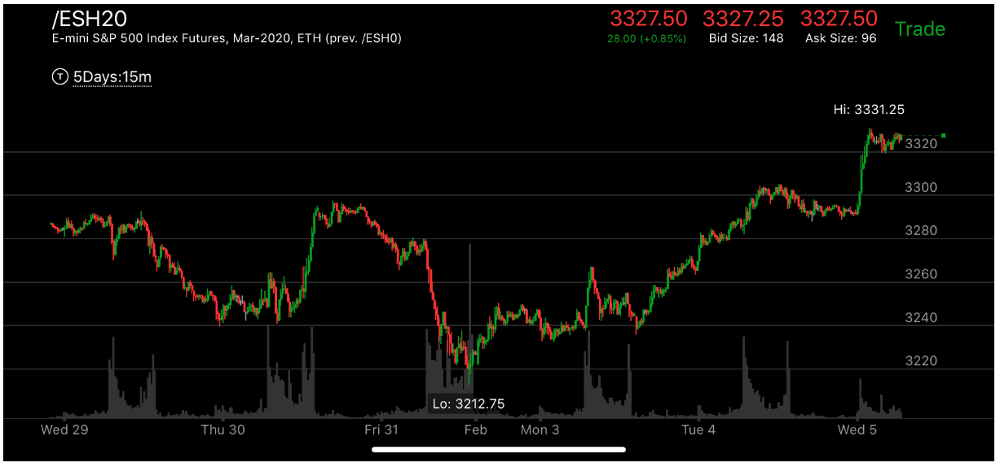

相对时间决定走势反转或者继续
- 如果是相同的距离，而相对时间不一样，这时走势本身出现了见底或者见顶的样子，那么就会反转或者继续。
所以要时时刻刻观察时间因素。有时候比较大的浪，需要看好几天的，可以用15分钟或者30分钟来该观察
图示：
图一：Fri24, 它一浪反转。然后开始上涨，可以看到它上涨的速度快于下跌。
而且它本身出现了加速上涨，和前面的高点接近。这样它本身就反转了。
图二：这个走势的顶点，它冲高后，在高点徘徊很久，没有再次创新高，然后大幅下跌。也是一个相对时间走势。
它看起来虽然下跌时间比较短。但是它在高点走平很久。这个其实就是下跌的时间的一部分，只是它在高点很久，
后面加速下跌。

图示：
从Feb，开始上涨，它的总的时间很久，远远高于前面下跌的时候，这样它缓慢到了前面高点后，
虽然走平，但是不会停下来，会继续上涨。
图示：Thu30后面的大涨，上涨速度很快越过了前面3290走平的高点，然后开始震荡，
这样就会反转了。